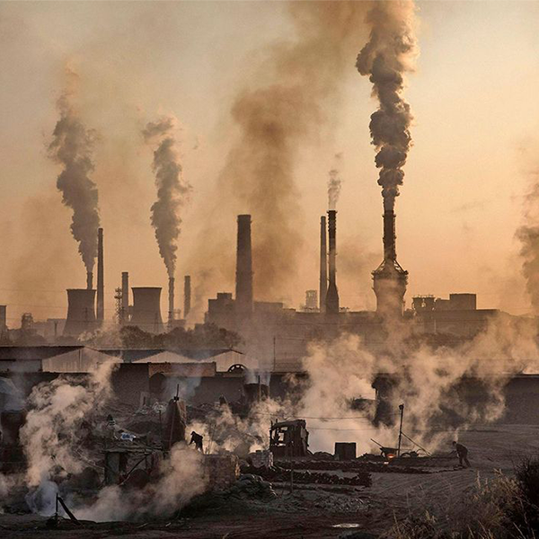
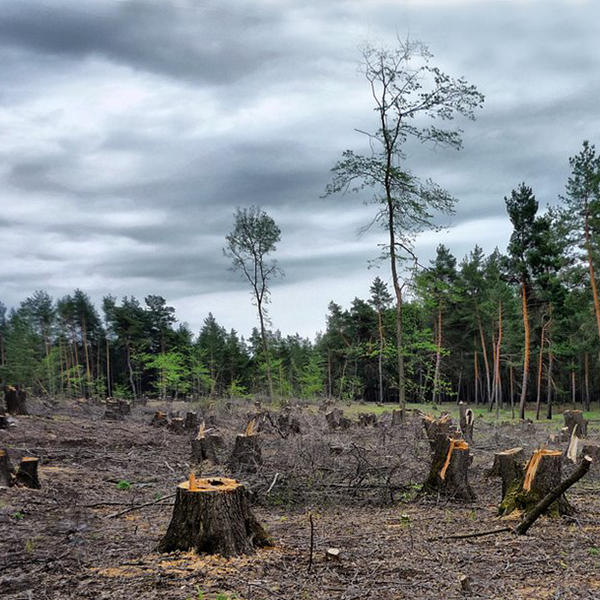
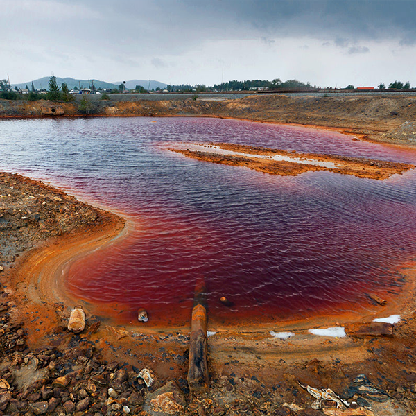
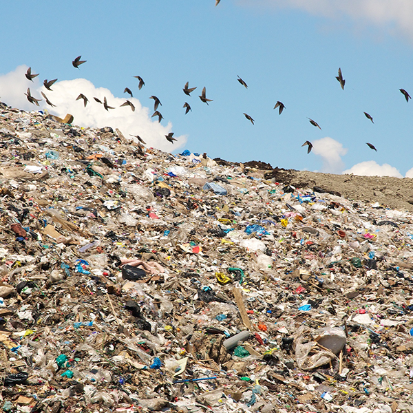

ЛУЧШИЙ СПОСОБ ПРЕДСКАЗАТЬ БУДУЩЕЕ - ЭТО СОЗДАТЬ ЕГО
ЕСЛИ МЫ И МОЖЕМ ИЗМЕНИТЬ МИР, ТО ТОЛЬКО ВМЕСТЕ ПРИСОЕДИНЯЙСЯ →
ГЛАВНЫЕ ПРОБЛЕМЫ ЭКОЛОГИИ
Глобальные экологические проблемы актуальны для России. Следует признать, что страна является одной из самых загрязненных в мире. Это сказывается на качестве жизни и пагубно влияет на здоровье людей. Возникновение экологических проблем в России, как и в других странах, связано с интенсивным влиянием человека на природу, которое приобрело опасный и агрессивный характер.
Одной из главных проблем экологии страны является неправильное обращение с отходами. Промышленные и бытовые отходы загрязняют поверхностные и подземные воды, а также почву. В среднем на каждого жителя России приходится 400 кг твердых бытовых отходов в год. Единственный выход – это переработка отходов (бумага, стекло). Предприятий, которые занимаются утилизацией или переработкой отходов действует в стране очень мало.
Ситуацию усугубляет то, что в стране существует огромное количество нелегальных полигонов, которые размещают отходы без дальнейшего обращения. Так же большой проблемой являются недобросовестные организации, занимающиеся транспортированием мусора без лицензии, свозя отходы на вышеупомянутые полигоны вместо того чтобы утилизировать отходы. Или куда хуже разгружают отходы в лес.
ПРОБЛЕМЫ ЭКОЛОГИИ
ЧТО ПРОИСХОДИТ С ЭКОЛОГИЕЙ В РОССИИ?
-

ЗАГРЯЗЕНИЕ ВОЗДУХА
Выбросы промышленных отходов ухудшают состояние атмосферы. Вредные частицы загрязняют озоновый слой и разрушают его. Попадая в атмосферу, они вызывают кислотные дожди, которые в свою очередь загрязняют землю и водоемы. Все эти факторы являются причиной онкологических и сердечно-сосудистых заболеваний населения, а также вымирания животных.
-

ВЫРУБКА ЛЕСОВ
В стране процесс вырубки лесных массивов практически бесконтрольный, в ходе чего вырубаются сотни гектаров зеленой зоны. Наиболее изменилась экология на северо-западе страны, а также становится актуальной проблема обезлесенья Сибири. Это приводит к вытеснению многих видов флоры и фауны из мест их обитания. Нарушается круговорот воды, климат становится более сухим и образуется парниковый эффект;
-

ЗАГРЯЗЕНИЕ ВОД И ПОЧВЫ
Промышленные и бытовые отходы загрязняют поверхностные и подземные воды, а также почву. Ситуацию ухудшает то, что в стране слишком малое количество водоочистительных сооружений, а большинство эксплуатируемого оборудования устарело. Ежегодно реки и озера загрязняют отходы химической промышленности.
-

БЫТОВЫЕ ОТХОДЫ
В среднем на каждого жителя России приходится 400 кг твердых бытовых отходов в год. Единственный выход – это переработка отходов (бумага, стекло). Предприятий, которые занимаются утилизацией или переработкой отходов действует в стране очень мало;
ЭКОЛОГИЯ В ЦИФРАХ
-
8 МЛН ТОНН
По данным экологов, один житель России создает в среднем 0,5 кг мусора в день, то есть 182,5 кг за год. 46 миллионов жителей оставляют ежегодно после себя 8 млн тонн мусора!
-
260 ТЫС ГА
У нас 11 млн свалок, занимающих 260 тысяч гектаров, — это больше, чем государство Люксембург! Это как три столицы России.
-
36 МЛН
36 млн россиян живут в городах, где загрязнение воздуха в 10 раз превышает санитарные нормы. 48 кг различных канцерогенных веществ в год вдыхает житель мегаполиса. На 4 года меньше живет средний житель мегаполиса по сравнению с теми, кто живет в сельской местности
-
11 МЛН ГА
Ежегодно с лица Земли исчезает 11 млн. га тропических лесов – это в 10 раз превышает масштабы лесовосстановления. Почти половина всех лесов в Великобритании исчезла за последние 80 лет. Половина тропических лесов Амазонки исчезнет в 2030 году.
КАЖДЫЙ ИЗ НАС ЭКООПЕРАТОР
Мы создаем движение, направленное на изменение окружающей нас с вами среды к лучшему. Это очень длинный и сложный путь, преодолеть который невозможно без участия каждого. Концепция экооператора подразумевает под собой действия направленные на экологичность. И каждый из нас является экооператором. Но какие действия он выполняет зависит лишь от него.
Взгляните на муравьев – это социальное насекомое. Мы видим в муравьях идеальных экооператоров. Они сплоченно придерживаются миссии сохрания экосистемы, выполняя огромное количество функций. Люди подобны муравьям, живут в своих муравейниках, работают на работах. Но заботу о окружающей среде променяли на материальные блага. Мы не заботимся, о том, что происходит с нашим домом, невозможно представить, чтобы муравей целенаправленно рушил свой муравейник и вредил целому лесу. А мы вредим не только лесу и себе самим.
Важно понимать какие операции ты выполняешь, чтобы достичь заданные эко-цели.
Создавая программу ЭКООПЕРАТОР мы хотим в первую очередь направить ресурсы на изменение окружающего мира к лучшему. Обратить внимание людей на то, в каком мире мы живем, и как сильно наша деятельность влияет на него. Небольшие изменения в нас самих, наших привычек и взгляде на мир поможет кардинально изменить ситуацию в лучшую сторону. Выполняя нашу миссию в рамках этой программы мы ищем единомышлеников. Вместе мы сможем изменить себя и мир. В рамках программы очищая нашу страну от несанкционированных свалок, очищая водоемы, создавая инфраструктуру для правильного обращения с отходами. Мы постарались отразить текущую ситуацию в мире транспортирования отходов в настольной игре. Показывая как на самом деле обстоят дела, и отвечая на многие вопросы: как работают перевозчики, почему отличается цена, где выгружают мусор "нелегалы". Если вы обладатель нашей игры, значит мы считаем что именно вы можете присоединиться к нам. Мы будем очень рады, если вы оставите пару слов вашего мнения о игре и движении в целом.